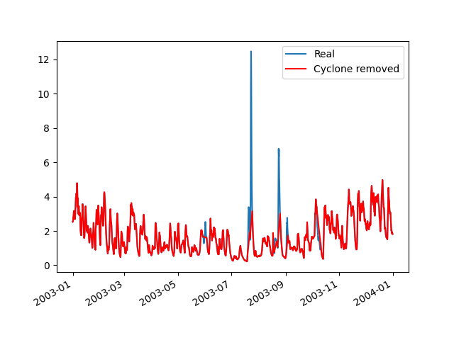

Note
Click here to download the full example code
Cyclone removal¶
import pandas as pd
import toto
from toto.core.cyclone_mask import Cyclone,binaries_directory
import os
import matplotlib.pyplot as plt
from pandas.plotting import register_matplotlib_converters
register_matplotlib_converters()
# Read a Txt file
#filename=r'../_tests/txt_file/cyclones_115.3085_19.8892.txt'
filename='https://raw.githubusercontent.com/calypso-science/Toto/master/_tests/txt_file/cyclones_115.3085_19.8892.txt'
df0=pd.read_csv(filename,delimiter='\t',header=0)
df0.rename(columns={'Year':'year','Month':'month','Day':'day',
'H[UTC]':'hour','Min':'minute','Sec':'second'},
inplace=True)
time=pd.to_datetime(df0[['year','month','day','hour','minute','second']])
# Time series location
lon=115.3085
lat=19.8892
# import Cyclone module
CYCLONE_FILE=os.path.join(binaries_directory(),'IBTrACS.ALL.v04r00.nc')
cy=Cyclone(cyclone_file=CYCLONE_FILE)
cy.min_cat=1 # Minimum category to use
cy.rmw=None # radius_of_tropical_cyclone_maximum_sustained_wind_speed if not set it will use radius in meters
cy.radius=500 # radius around the cente to mask in meter
cy.mask_before=12/24. # hours before a cyclone to mask
cy.mask_after=12/24. # hours after a cyclone to mask
# mask all timestep within cy.radius with cyclone above or equal the minimum category
cy.limit_categories_within_radius([lon,lat])
# create the mask
msk=cy.remove_cyclones(time,[lon,lat])
# Apply the mask
df_no_cyclone=df0.loc[~msk]
# Plot the results
fig, ax = plt.subplots(1)
ax.plot(time,df0['hs[m]'],label='Real')
ax.plot(time[~msk],df_no_cyclone['hs[m]'],'r',label='Cyclone removed')
#plt.xlim(datetime.datetime(2010,11,1),datetime.datetime(2010,12,1))
plt.legend()
fig.autofmt_xdate()
plt.show()
Total running time of the script: ( 0 minutes 2.182 seconds)